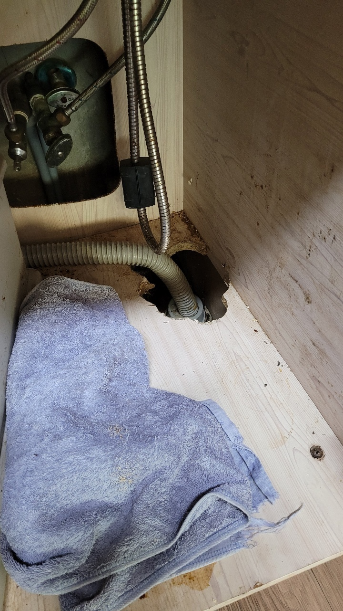
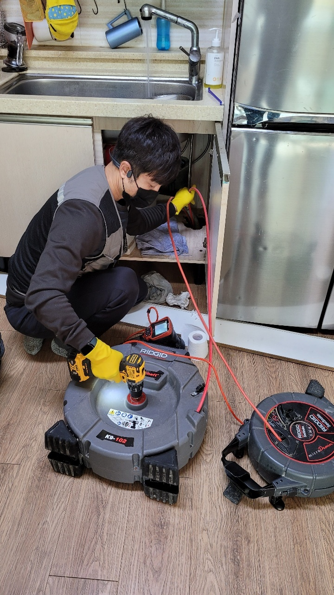
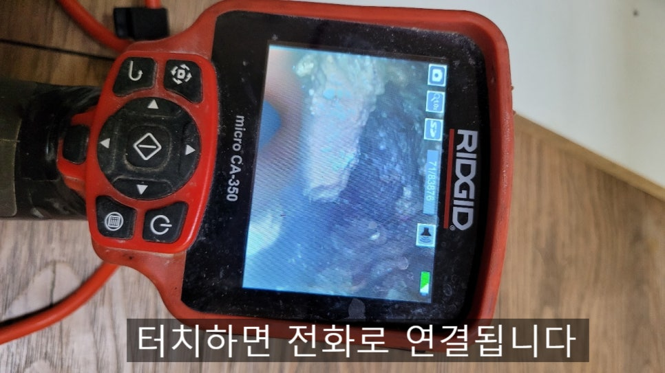
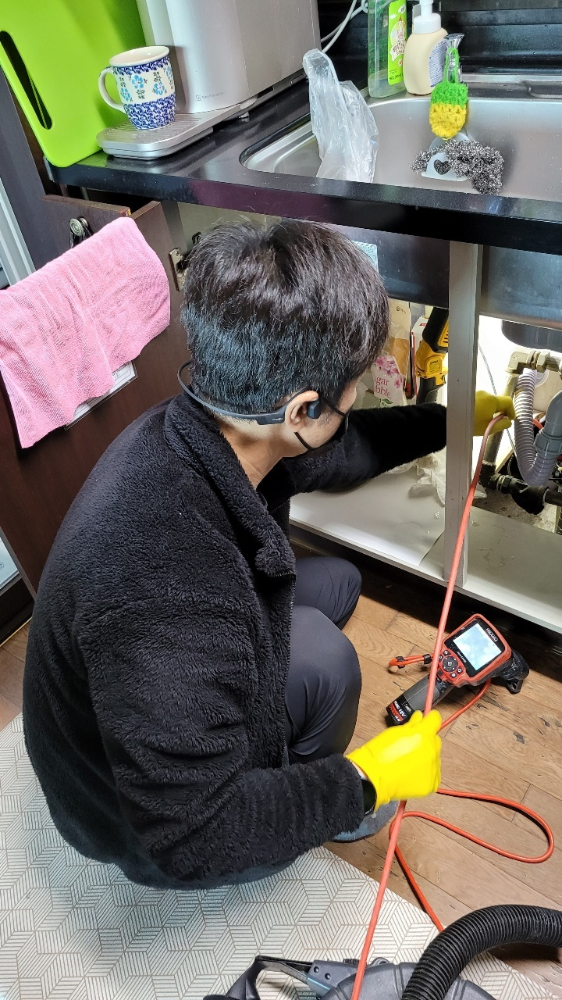
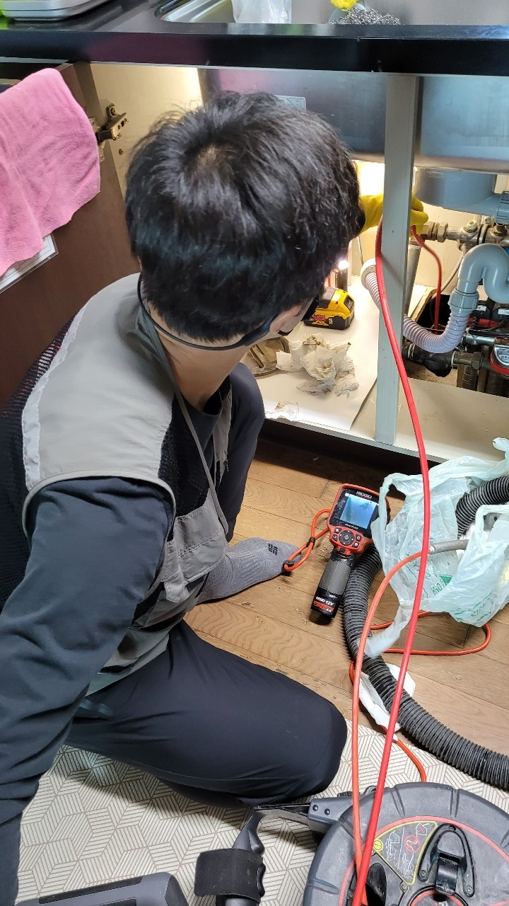
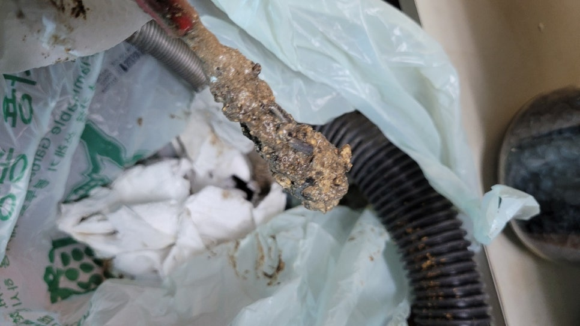

🏠 화성시 향남싱크대막힘 아파트싱크대 누수 손쉽게 해결!
화성 향남 싱크대막힘 전문 시공 후기

📋 작업 개요
- 위치: 화성 향남, 향남, 화성
- 서비스 유형: 싱크대막힘, 변기막힘, 하수구막힘, 배관막힘, 누수수리, 역류해결, 뚫는업체, 배관청소, 고압세척, 악취차단
- 작업 일시: 2022. 12. 8. 23:15
- 업체명: 하수구수사대 (010-5615-2118)
🔍 문제 상황
안녕하세요. 하수구수사대입니다.
일상에서 배관 막힘은 상당히 불편함을 야기할 수 있는 상황이라고 할 수 있습니다.
생활 속에서도 쉽게 발생을 하는 각종 설비 문제로 인해서 고생을 하는 분들을 위해서 오늘 화성 향남싱크대막힘 상신리 하길리 하수구업체를 통해서 어떻게 해결을 하는지에 대해서 알려드리도록 하겠습니다. 보통 욕실에 설치되어 있는 변기나 주방의 싱크대 그리고 바닥의 배수구나 욕조 등에는 하수구의 배관으로 연결이 되어 있습니다.
이러한 곳의 하수구가 막히게 되면 사용하지 못하게 되는 설비물들이 여러 가지가 있는데요. 보통 이러한 문제가 발생하게 되는 원인은 무엇인지 그리고 집안 내에서 발생을 했을 경우에는 어떻게 해결을 해야 하는지에 대해서 궁금하신 분들이 많을 것이라 생각합니다.

🔎 원인 분석
💡 전문가 진단: 일상에서 배관 막힘은 상당히 불편함을 야기할 수 있는 상황이라고 할 수 있습니다.
얼마 전에 저희 하수구수사대가 직접 해결을을 한 현장인데요.
화성 향남싱크대막힘 상신리 하길리 하수구업체를 통해서 전문적으로 막힘을 말끔하게 뚫어드렸습니다. 현장에 거주를 하고 계시는 고객님께서는 잘 이용하고 있던 화장실에서 갑자기 물이 배수가 되지 않는 현상을 느껴서 불편함을 크게 느끼신 상황이었습니다.
평소에 잘 사용하고 있던 화장실이 하루아침에 물바다가 되고 사용을 하지 못하게 되면서 어느 순간 역류까지 발생을 할 수도 있는 상황이었습니다. 현장에 방문을 해서 가장 먼저 고여있던 물을 제거하는 작업을 하였습니다.
배관 내부에 있는 물이 바닥 위로 차올라 오면서 화장실 내부로 내시경 카메라를 진입하기 어려운 상황이었습니다.

🔧 작업 과정
그래서 석션기를 이용해서 고인물과 이물질 덩어리들을 먼저 제거를 해서 작업하기에 좋은 환경을 만드는 것이 우선이었습니다. 다음으로 본격적으로 문제를 해결하기 위해서 하수구 커버부터 분리를 하고 내부를 확인하였습니다.
가정집의 화장실에서는 보통 악취를 차단하기 위해서 커버가 씌워져 있는 경우가 많이 있는데요. 하지만 이러한 커버가 있다고 하더라도 악취는 지속적으로 유입이 될 수 있는데요. 배관은 보이지 않는 곳인 만큼 정기적인 점검을 통해서 관리를 해주는 것이 필요하다고 할 수 있습니다.
그러므로 원인 제거를 위해서는 배관 점검도 반드시 받아보아야 하는데요.
입구의 물을 제거한 뒤에 내시경을 이용해서 내부의 상태를 먼저 확인을 해보았습니다. 배관 내부에는 기름때와 머리카락 그리고 석회질 등의 여러가지 형태의 이물질들이 잔뜩 자리를 잡고 있는 상황이었습니다. 이러한 상태로 시간이 오래 지체가 되게 되면 이물질들은 배관 벽면으로 더 흡착이 될 수밖에 없습니다.
여기에 부식까지 진행이 되게 되면 악취까지 발생하게 되는 것입니다. 배관 내부에 있는 이물질들과 악취를 모두 제거를 하기 위해서는 고압세척이 필요한데요. 내부의 이물질을 강한 수압을 통해서 한 번에 해결을 할 수 있는 장비라고 할 수 있습니다.
내시경을 이용해서 내부를 계속 확인을 하면서 고압세척 작업을 반복하였습니다.
내부에 있는 석회질도 부서질 수 있을 정도로 강한 압력으로 내부를 세척해 주게 되는 것입니다. 배관 속을 말끔하게 청소까지 해주기 때문에 각종 악취들도 모두 없어질 수 있습니다.


✅ 작업 완료
배관 내부가 깨끗해진 것을 보고 화성 향남싱크대막힘 상신리 하길리 하수구업체 현장을 모두 마무리하였는데요. 악취와 배관 막힘 모두를 한번에 해결을 해서 고객님께서도 아주 만족해하셨습니다. 배관 막힘은 언제든 발생할 수 있는 것인 만큼 정기점검을 통해서 관리를 하는 것이 필요합니다.
경기도 화성시 향남읍 상신하길로298번길 7-11 8층 805호




⚠️ 베란다 누수 및 방수 관리 방법
- ✅ 비가 많이 올 때 창틀 주변이나 아래층 천장에 얼룩이 생기는지 정기적으로 확인해 보세요.
- ✅ 우수관 주변 실리콘 마감이 들뜨거나 깨진 틈새가 있는지 손상 여부를 수시로 체크하세요.
- ✅ 베란다 바닥 타일의 줄눈(메지)이 소실되면 그 틈으로 물이 침투하여 누수가 유발됩니다.
- ✅ 누수 의심 증상 발견 시 방치하면 아래층 손실이 커지므로 즉시 전문가의 진단을 받으십시오.
💡 핵심 정리
- 확실한 장비 작업(내시경 점검 및 샤프트 스케일링)으로 원인을 뿌리 뽑습니다.
- 작업 후 1년 이내에 동일한 부위 재발 시 100% 무상 A/S 서비스를 보장합니다.
- 서울 · 경기 · 인천 전 지역에 24시간 언제든 긴급 출동할 수 있도록 항시 대기 중입니다.
❓ 자주 묻는 질문 (FAQ)
🚨 화성 향남 싱크대막힘 문제로 고민이신가요?
정확한 원인 진단과 확실한 시공으로 재발 없는 해결을 약속드립니다.
24시간 긴급 출동 | 서울 · 경기 · 인천 전지역 | 1년 내 재발 시 무상 A/S